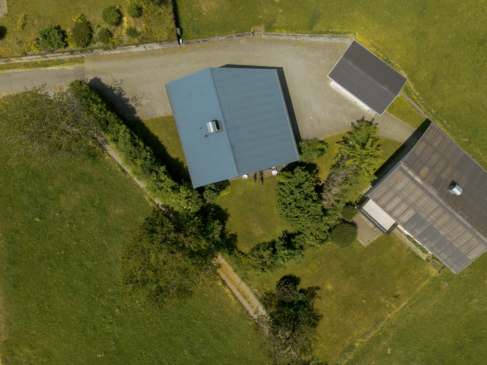

🏔️ Lindauer Hütte
Cinematische videocompilatie van deze prachtige accommodatie in de bergen.


Elk project is anders — bekijk hier de projecten per map.
Klik op een project om de foto's en video's te bekijken.
Cinematische videocompilatie — horeca & vakantie
Promotievideo — Zandvoort
Cinematische woningvideo
Vakantie-accommodatie in de bergen
FPV-shots en luchtfoto's
Terreinfotografie — before & after
Cinematische videocompilatie van deze prachtige accommodatie in de bergen.
Promotievideo voor deze unieke locatie aan zee.


🎬 De promotievideo verschijnt hier zodra deze op YouTube staat.
Cinematische video van een woning — laat zien wat dronetechniek voor vastgoed kan doen.

Vakantie-accommodatie in het Oostenrijkse berglandschap.


Terreinfotografie van een woonwijk in ontwikkeling — vliegposities exact opgeslagen voor before & after-vergelijkingen.


Filmische FPV-shots, dronevideo's en luchtfoto's van plekken over de hele wereld — opgenomen met de DJI Avata 2 en Air 3S.


Ik maak graag cinematische beelden van jouw locatie.
Vraag een offerte via e-mail